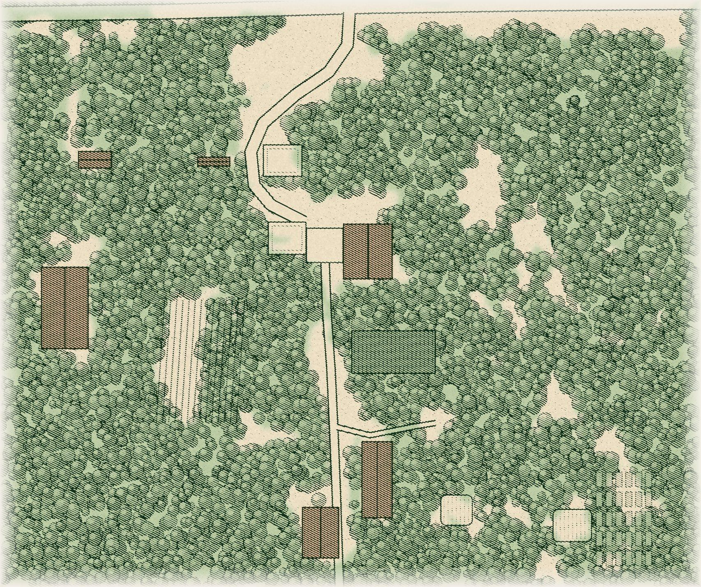
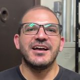
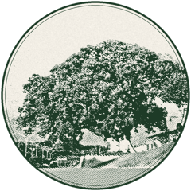

mostrar

Av. Bandeirantes ↑Nfora do mapa, na cidade
Um mapa sem escala, feito de lembranças. Cada ponto guarda uma fala, fotos, vídeos e um pouco da história de quem conhece o núcleo por dentro. Clique num número pra abrir.

Quem guia o passeioJair Vaz, biólogo do NEAS desde 2019
Av. Bandeirantes ↑Nfora do mapa, na cidade

O NEAS recebe escolas, grupos e quem tiver curiosidade, sempre com agendamento. Dá pra conhecer o viveiro, o museu e as trilhas com alguém da equipe.